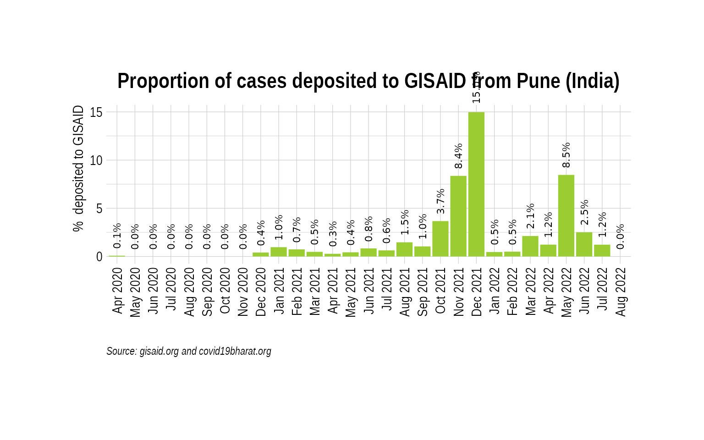
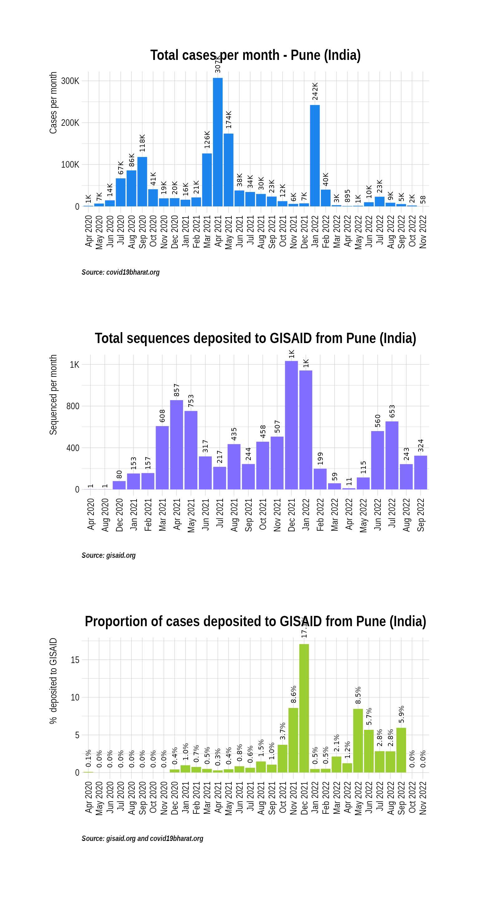
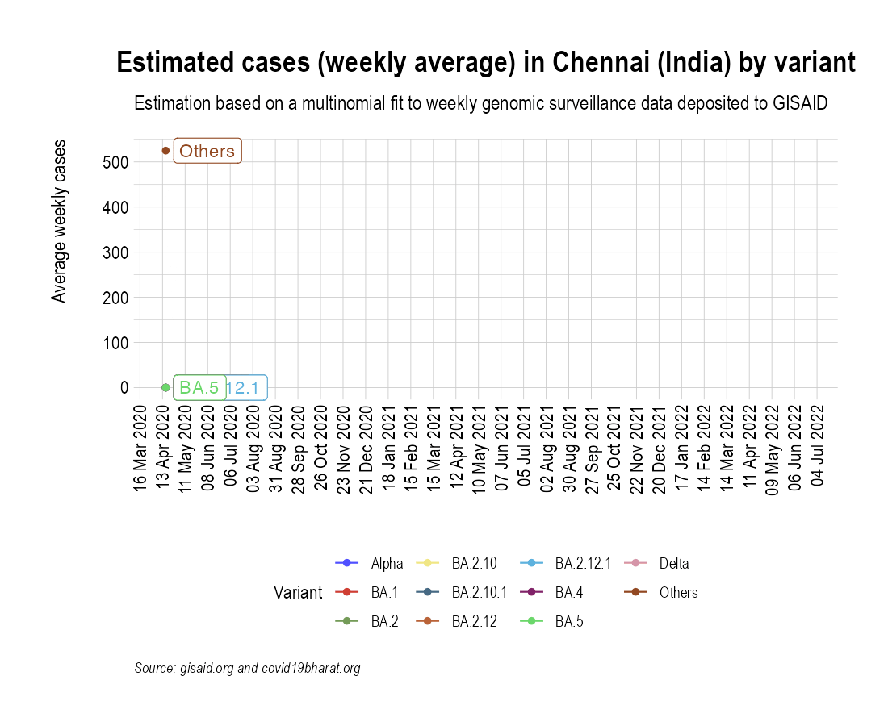
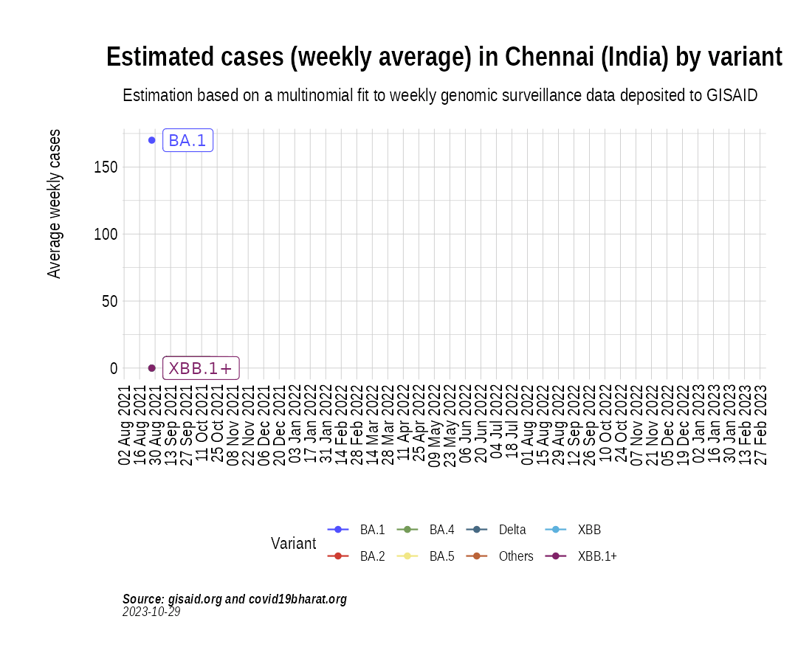
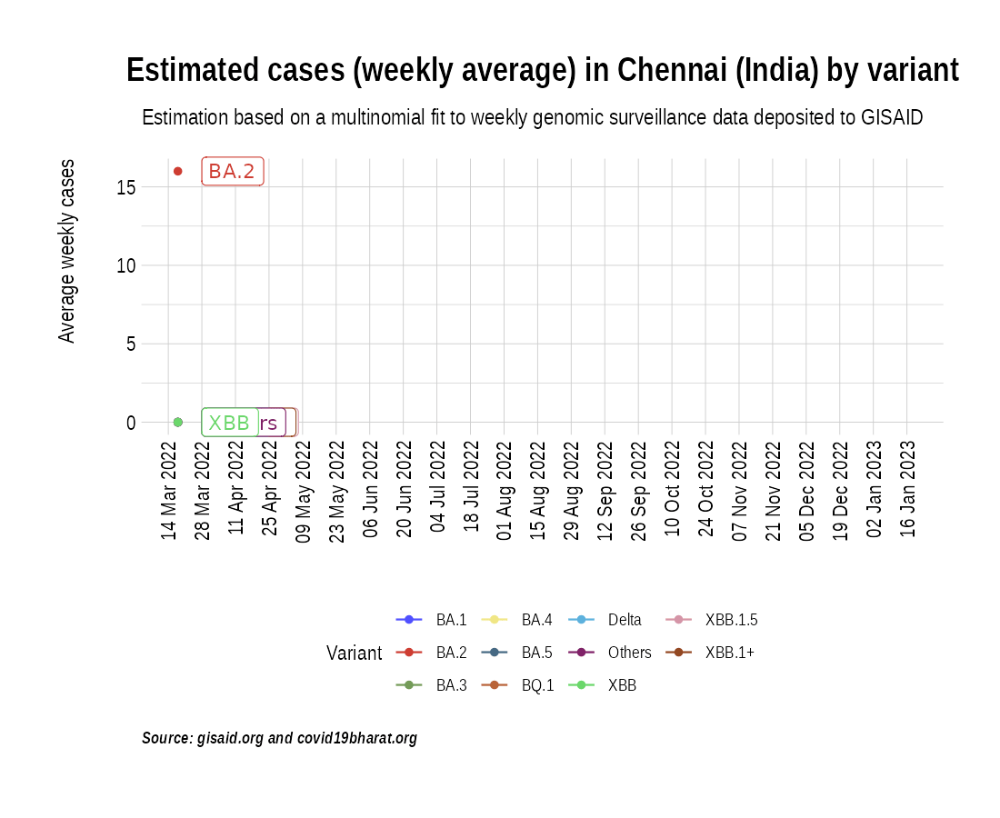

Animation of projected weekly cases - Chennai (India)
Source:vignettes/VariantAnimation-Pune.Rmd
VariantAnimation-Pune.Rmd
suppressPackageStartupMessages({
library(covmuller)
library(tidyverse)
})
theme_set(CovmullerTheme())Get variants data for India
gisaid_metadata <- qs::qread("~/github/2021_Covid19_surveillance/data/all_metadata/metadata_tsv_2022_06_06.qs")
gisaid_india <- FilterGISAIDIndia(gisaid_metadata_all = gisaid_metadata)
vocs <- GetVOCs()
omicron <- vocs[["omicron"]]
vocs[["omicron"]] <- NULL
custom_voc_mapping <- list(
`BA.1.1` = "BA.1.1",
`BA.1` = "BA.1",
`BA.2` = "BA.2",
`BA.2.1` = "BA.2.1",
`BA.2.10` = "BA.2.10",
`BA.2.10.1` = "BA.2.10.1",
`BA.2.12` = "BA.2.12",
`BA.2.12.1` = "BA.2.12.1",
`BA.3` = "BA.3",
`BA.4` = "BA.4",
`BA.5` = "BA.5"
)
gisaid_india <- gisaid_india %>% filter(pangolin_lineage != "None") %>% filter(pangolin_lineage != "Unassigned")
gisaid_india$District <- stringr::str_to_title(gisaid_india$District)
gisaid_india$City <- stringr::str_to_title(gisaid_india$City)
gisaid_india$custom_city <- gisaid_india$City
gisaid_india$custom_city[gisaid_india$custom_city==""] <- gisaid_india$District[gisaid_india$custom_city==""]
gisaid_india$custom_city <- stringr::str_to_title(gisaid_india$custom_city)
gisaid_india <- CollapseLineageToVOCs(
variant_df = gisaid_india,
vocs = vocs,
custom_voc_mapping = custom_voc_mapping,
summarize = FALSE
)Get monthly cases for Pune
chennai_monthly_cases <- GetIndiaConfirmedCasesMonthlyLong(level = "district") %>% filter(District == "Chennai")
head(chennai_monthly_cases)## # A tibble: 6 × 4
## # Groups: MonthYear, State [6]
## MonthYear State District value
## <yearmon> <chr> <chr> <dbl>
## 1 Apr 2020 Tamil Nadu Chennai 910
## 2 May 2020 Tamil Nadu Chennai 13889
## 3 Jun 2020 Tamil Nadu Chennai 43528
## 4 Jul 2020 Tamil Nadu Chennai 41467
## 5 Aug 2020 Tamil Nadu Chennai 35803
## 6 Sep 2020 Tamil Nadu Chennai 31779Get weekly cases for Chennai
chennai_seq_stats <- TotalSequencesPerMonthCountrywise(gisaid_india %>% filter(custom_city == "Chennai"), rename_country_as_state = TRUE)
p2 <- BarPlot(chennai_seq_stats, ylabel = "Sequenced per month", color = "slateblue1", label_si = TRUE, title = "Total sequences deposited to GISAID from Chennai (India)", caption = "**Source: gisaid.org <br>**")
p2
Overall, how much has Chennai sequenced over months?
While the absolute numbers are informative, a more useful metric is the proportion of cases (cases sequenced over total cases) that are getting sequenced. Here we look at the proportion of cases that have been sequenced in India over the course of the pandemic:
chennai_monthly_cases_tmp <- chennai_monthly_cases %>% select(MonthYear, value)
chennai_monthly_cases_tmp$State <- "India"
chennai_monthly_cases_tmp$type <- 'Confirmed'
chennai_monthly_cases_tmp <- chennai_monthly_cases_tmp %>% select(MonthYear, State, value, type)
sequencing_proportion <- CombineSequencedCases(
cases_sequenced = chennai_seq_stats,
confirmed_long = chennai_monthly_cases_tmp
)
p3 <- BarPlot(sequencing_proportion, yaxis = "percent_sequenced_collected", ylabel = "% deposited to GISAID", color = "yellowgreen", title = "Proportion of cases deposited to GISAID from Chennai (India)", caption = "**Source: gisaid.org and covid19bharat.org<br>**")
p3
p1 / p2 / p3
Project weekly cases to variant prevalence data from GISAID
confirmed_subset_dateweekwise_long <- GetIndiaConfirmedCasesWeeklyLong(level = "district")
gisaid_dist_weekwise <- SummarizeVariantsWeekwise(gisaid_india %>% filter(custom_city == "Chennai") %>% arrange(WeekYearCollected))
confirmed_subset_dateweekwise_long_dist <- confirmed_subset_dateweekwise_long %>%
filter(District %in% c("Chennai")) %>%
rename(n = value) %>%
rename(WeekYearCollected = WeekYear) %>%
dplyr::select(-contains("type")) %>%
filter(WeekYearCollected >= min(gisaid_dist_weekwise$WeekYearCollected))
confirmed_subset_dateweekwise_long_dist$State <- NULL
voc_to_keep <- gisaid_dist_weekwise %>%
group_by(lineage_collapsed) %>%
summarise(n_sum = sum(n)) %>%
filter(n_sum > 1) %>%
pull(lineage_collapsed) %>%
unique()
gisaid_dist_weekwise <- gisaid_dist_weekwise %>% filter(lineage_collapsed %in% voc_to_keep)
india_cases_pred_prob_sel_long <- FitMultinomWeekly(gisaid_dist_weekwise, confirmed_subset_dateweekwise_long_dist)## # weights: 44 (30 variable)
## initial value 8867.416719
## iter 10 value 4042.958124
## iter 20 value 3079.672196
## iter 30 value 2879.750361
## iter 40 value 2848.331622
## iter 50 value 2843.155993
## iter 60 value 2824.163784
## iter 70 value 2820.720169
## iter 80 value 2815.334214
## iter 90 value 2812.375369
## iter 100 value 2810.739081
## iter 110 value 2804.434349
## iter 120 value 2802.251773
## final value 2802.176387
## converged
the_anim <- PlotVariantPrevalenceAnimated(india_cases_pred_prob_sel_long, title = "Estimated cases (weekly average) in Chennai (India) by variant", caption = "**Source: gisaid.org and covid19bharat.org**", date_breaks = "28 days")
gganimate::anim_save(filename = here::here("docs/articles/Chennai_animated.gif"), animation = the_anim)
Look at cases after October, 2021 only:
confirmed_subset_dateweekwise_long <- GetIndiaConfirmedCasesWeeklyLong(level = "district")
confirmed_subset_dateweekwise_long <- confirmed_subset_dateweekwise_long %>%
filter(WeekYear >= tsibble::yearweek("2021 W35")) %>%
filter(District %in% c("Chennai")) %>%
group_by(WeekYear) %>%
summarise(n = sum(value)) %>%
arrange(WeekYear) %>%
rename(WeekYearCollected = WeekYear)
gisaid_dist <- gisaid_india %>% filter(MonthYearCollected > "Oct 2021") %>% filter(custom_city == "Chennai") %>% arrange(WeekYearCollected)
gisaid_weekwise <- SummarizeVariantsWeekwise(gisaid_dist)
voc_to_keep <- gisaid_weekwise %>%
group_by(lineage_collapsed) %>%
summarise(n_sum = sum(n)) %>%
filter(n_sum > 1) %>%
pull(lineage_collapsed) %>%
unique()
gisaid_weekwise <- gisaid_weekwise %>% filter(lineage_collapsed %in% voc_to_keep)
cases_pred_prob_sel_long <- FitMultinomWeekly(gisaid_weekwise, confirmed_subset_dateweekwise_long)## # weights: 40 (27 variable)
## initial value 6916.965619
## iter 10 value 3195.085049
## iter 20 value 2623.722661
## iter 30 value 2583.137106
## iter 40 value 2578.371274
## iter 50 value 2577.498304
## iter 60 value 2577.392261
## iter 70 value 2577.358037
## iter 80 value 2577.236604
## iter 90 value 2577.113740
## iter 100 value 2577.073448
## iter 110 value 2577.071255
## final value 2577.069578
## converged
the_anim <- PlotVariantPrevalenceAnimated(cases_pred_prob_sel_long, title = "Estimated cases (weekly average) in Chennai (India) by variant", caption = "**Source: gisaid.org and covid19bharat.org<br>**")
gganimate::anim_save(filename = here::here("docs/articles/Chennai_animated_2021.gif"), animation = the_anim)
Look at cases in the last few weeks:
confirmed_subset_dateweekwise_long <- GetIndiaConfirmedCasesWeeklyLong(level = "district")
confirmed_subset_dateweekwise_long <- confirmed_subset_dateweekwise_long %>%
filter(WeekYear >= tsibble::yearweek("2022 W12")) %>%
filter(District %in% c("Chennai")) %>%
group_by(WeekYear) %>%
summarise(n = sum(value)) %>%
arrange(WeekYear) %>%
rename(WeekYearCollected = WeekYear)
gisaid_dist <- gisaid_india %>% filter(MonthYearCollected > "Oct 2021") %>% filter(custom_city == "Chennai") %>% arrange(WeekYearCollected)
gisaid_weekwise <- SummarizeVariantsWeekwise(gisaid_dist)
voc_to_keep <- gisaid_weekwise %>%
group_by(lineage_collapsed) %>%
summarise(n_sum = sum(n)) %>%
filter(n_sum > 1) %>%
pull(lineage_collapsed) %>%
unique()
gisaid_weekwise <- gisaid_weekwise %>% filter(lineage_collapsed %in% voc_to_keep)
cases_pred_prob_sel_long <- FitMultinomWeekly(gisaid_weekwise, confirmed_subset_dateweekwise_long)## # weights: 40 (27 variable)
## initial value 6916.965619
## iter 10 value 3195.085049
## iter 20 value 2623.722661
## iter 30 value 2583.137106
## iter 40 value 2578.371274
## iter 50 value 2577.498304
## iter 60 value 2577.392261
## iter 70 value 2577.358037
## iter 80 value 2577.236604
## iter 90 value 2577.113740
## iter 100 value 2577.073448
## iter 110 value 2577.071255
## final value 2577.069578
## converged
the_anim <- PlotVariantPrevalenceAnimated(cases_pred_prob_sel_long, title = "Estimated cases (weekly average) in Chennai (India) by variant", caption = "**Source: gisaid.org and covid19bharat.org<br>**")
gganimate::anim_save(filename = here::here("docs/articles/Chennai_animated_2022.gif"), animation = the_anim)